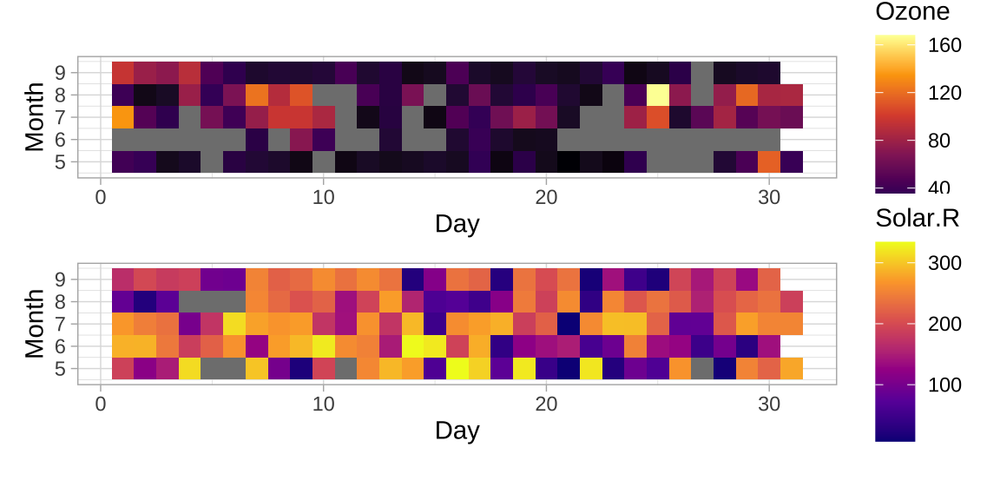

Ozone Solar.R Wind Temp
Min. : 1.00 Min. : 7.0 Min. : 1.700 Min. :56.00
1st Qu.: 18.00 1st Qu.:115.8 1st Qu.: 7.400 1st Qu.:72.00
Median : 31.50 Median :205.0 Median : 9.700 Median :79.00
Mean : 42.13 Mean :185.9 Mean : 9.958 Mean :77.88
3rd Qu.: 63.25 3rd Qu.:258.8 3rd Qu.:11.500 3rd Qu.:85.00
Max. :168.00 Max. :334.0 Max. :20.700 Max. :97.00
NA's :37 NA's :7
Month Day
Min. :5.000 Min. : 1.0
1st Qu.:6.000 1st Qu.: 8.0
Median :7.000 Median :16.0
Mean :6.993 Mean :15.8
3rd Qu.:8.000 3rd Qu.:23.0
Max. :9.000 Max. :31.0
5 数据处理
5.1 缺失值处理
缺失是一种非常常见的数据问题。R 软件内置一个关于空气质量的数据集 airquality ，该数据集的 Ozone（臭氧浓度）和 Solar.R （太阳辐射）两个指标含有缺失值。臭氧浓度受太阳辐射强度、风速、温度等影响。
可以看到，Ozone 列有 37 个缺失值，而 Solar.R 列有 7 个缺失值。
5.1.1 查找
缺失值在数据框中的位置，分布在哪些行。
5.1.2 汇总
缺失值的占比、分布情况，可视化获得缺失的结构
, , Wind = TRUE, Temp = TRUE, Month = TRUE, Day = TRUE
Solar.R
Ozone FALSE TRUE
FALSE 2 35
TRUE 5 111可以看到缺失数据的基本分布情况，图中灰色方块代表数据缺失。
library(ggplot2)
p1 <- ggplot(data = airquality, aes(x = Day, y = Month)) +
geom_tile(aes(fill = Ozone)) +
scale_fill_viridis_c(option = "B") +
coord_equal() +
theme_light()
p2 <- ggplot(data = airquality, aes(x = Day, y = Month)) +
geom_tile(aes(fill = Solar.R)) +
scale_fill_viridis_c(option = "C") +
coord_equal() +
theme_light()
library(patchwork)
p1 / p2
5.1.3 替换
替换数据框中的缺失值，下面以 Ozone 列的均值（剔除缺失值之后计算的）替代缺失值。
5.1.4 插补
缺失值插补 mice （Multivariate Imputation by Chained Equations，简称 mice）和 VIM
5.2 异常值处理
提及异常，一般会联想到数据本身出问题了，比如数据错误，这可能是抄录出错，迁移出错，数据上报出错等。然而，比较常见的情况是业务有异动，导致数据异常波动，业务上需要及时捕捉到这种异常波动，找到异常的原因，进而采取措施。值得注意的是，这并不意味着数据出错，数据还是如实地在反映业务情况。
5.2.1 检测
5.2.2 识别
5.2.3 处理
5.3 离群值处理
离群，并不是数据本身出问题，而是数据隐藏着特殊信息，与平时不一样的情况，与大家伙不一样的情况。比如情人节鲜花和蛋糕的需求量激增，端午节粽子的需求激增，这和平时很不一样。需求数据本身没有问题，如实反应了现实情况。因此，需要根据现实情况，调整预测模型，做出更加准确的需求预测，提前安排供给。